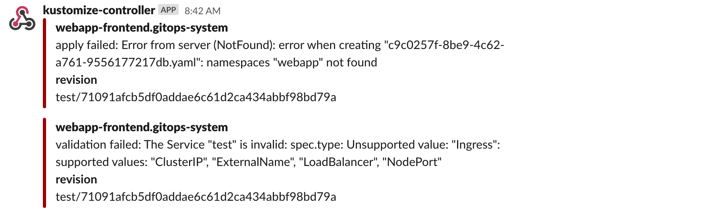
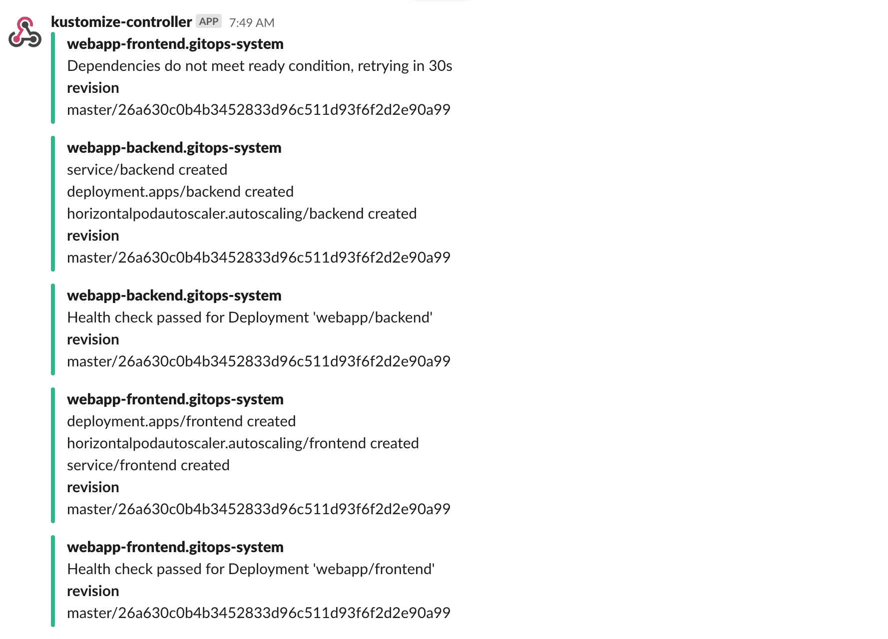
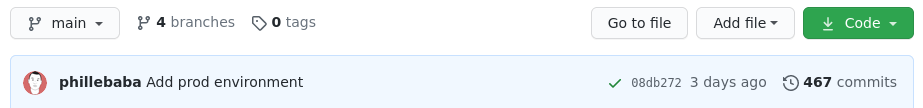
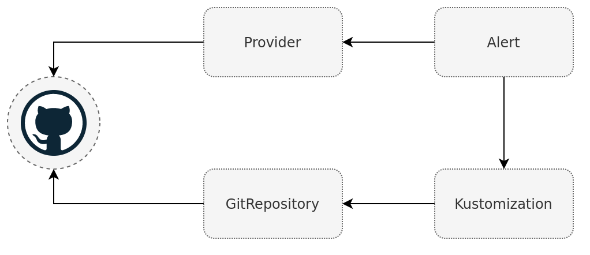
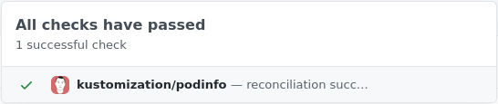
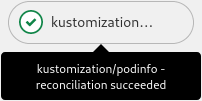
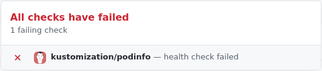
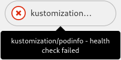

Setup Notifications¶
When operating a cluster, different teams may wish to receive notifications about the status of their GitOps pipelines. For example, the on-call team would receive alerts about reconciliation failures in the cluster, while the dev team may wish to be alerted when a new version of an app was deployed and if the deployment is healthy.
Prerequisites¶
To follow this guide you'll need a Kubernetes cluster with the GitOps toolkit controllers installed on it. Please see the get started guide or the installation guide.
The GitOps toolkit controllers emit Kubernetes events whenever a resource status changes. You can use the notification-controller to forward these events to Slack, Microsoft Teams, Discord or Rocket chart. The notification controller is part of the default toolkit installation.
Define a provider¶
First create a secret with your Slack incoming webhook:
kubectl -n flux-system create secret generic slack-url \
--from-literal=address=https://hooks.slack.com/services/YOUR/SLACK/WEBHOOK
Note that the secret must contain an address field,
it can be a Slack, Microsoft Teams, Discord or Rocket webhook URL.
Create a notification provider for Slack by referencing the above secret:
apiVersion: notification.toolkit.fluxcd.io/v1beta1
kind: Provider
metadata:
name: slack
namespace: flux-system
spec:
type: slack
channel: general
secretRef:
name: slack-url
The provider type can be slack, msteams, discord, rocket, github, gitlab or generic.
When type generic is specified, the notification controller will post the incoming
event in JSON format to the webhook address.
This way you can create custom handlers that can store the events in
Elasticsearch, CloudWatch, Stackdriver, etc.
Define an alert¶
Create an alert definition for all repositories and kustomizations:
apiVersion: notification.toolkit.fluxcd.io/v1beta1
kind: Alert
metadata:
name: on-call-webapp
namespace: flux-system
spec:
providerRef:
name: slack
eventSeverity: info
eventSources:
- kind: GitRepository
name: '*'
- kind: Kustomization
name: '*'
Apply the above files or commit them to the fleet-infra repository.
To verify that the alert has been acknowledge by the notification controller do:
$ kubectl -n flux-system get alerts
NAME READY STATUS AGE
on-call-webapp True Initialized 1m
Multiple alerts can be used to send notifications to different channels or Slack organizations.
The event severity can be set to info or error.
When the severity is set to error, the kustomize controller will alert on any error
encountered during the reconciliation process.
This includes kustomize build and validation errors,
apply errors and health check failures.

When the verbosity is set to info, the controller will alert if:
- a Kubernetes object was created, updated or deleted
- heath checks are passing
- a dependency is delaying the execution
- an error occurs

Git commit status¶
The GitHub, GitLab, Bitbucket, and Azure DevOps providers are slightly different to the other providers. Instead of a stateless stream of events, the git notification providers will link the event with accompanying git commit which triggered the event. The linking is done by updating the commit status of a specific commit.
In GitHub the commit status set by notification-controller will result in a green checkmark or red cross next to the commit hash. Clicking the icon will show more detailed information about the status. 
Receiving an event in the form of a commit status rather than a message in a chat conversation has the benefit that it closes the deployment loop giving quick and visible feedback if a commit has reconciled and if it succeeded. This means that a deployment will work in a similar manner that people are used to with "traditional" push based CD pipelines. Additionally the status can be fetched from the git providers API for a specific commit. Allowing for custom automation tools that can automatically promote, commit to a new directory, after receiving a successful commit status. This can all be done without requiring any access to the Kubernetes cluster.
As stated before the provider works by referencing the same git repository as the Kustomization controller does. When a new commit is pushed to the repository, source-controller will sync the commit, triggering the kustomize-controller to reconcile the new commit. After this is done the kustomize-controller sends an event to the notification-controller with the result and the commit hash it reconciled. Then notification-controller can update the correct commit and repository when receiving the event. 
Limitations
The git notification providers require that a commit hash present in the meta data
of the event. There for the the providers will only work with Kustomization as an
event source, as it is the only resource which includes this data.
First follow the get started guide if you do not have a Kubernetes cluster with Flux installed in it. You will need a authentication token to communicate with the API. The authentication method depends on the git provider used, refer to the Provider CRD for details about how to get the correct token. The guide will use GitHub, but the other providers will work in a very similar manner. The token will need to have write access to the repository it is going to update the commit status in. Store the generated token in a Secret with the following data format in the cluster.
apiVersion: v1
kind: Secret
metadata:
name: github
namespace: flux-system
data:
token: <token>
When sending notification events the kustomization-controller will include the commit hash related to the event.
Note that the commit hash in the event does not come from the git repository the Kustomization resource
comes from but rather the kustomization source ref. This mean that commit status notifications will not work
if the manifests comes from a repository which the API token is not allowed to write to.
Copy the manifest content in the "kustomize" directory into the directory "./clusters/my-cluster/podinfo" in your fleet-infra repository. Make sure that you also add the namespace podinfo.
apiVersion: v1
kind: Namespace
metadata:
name: podinfo
Then create a Kustomization to deploy podinfo.
apiVersion: kustomize.toolkit.fluxcd.io/v1beta1
kind: Kustomization
metadata:
name: podinfo
namespace: flux-system
spec:
interval: 5m
targetNamespace: podinfo
path: ./clusters/my-cluster/podinfo
prune: true
sourceRef:
kind: GitRepository
name: flux-system
healthChecks:
- apiVersion: apps/v1
kind: Deployment
name: podinfo
namespace: podinfo
timeout: 1m
Creating a git provider is very similar to creating other types of providers. The only caveat being that the provider address needs to point to the same git repository as the event source originates from.
apiVersion: notification.toolkit.fluxcd.io/v1beta1
kind: Provider
metadata:
name: flux-system
namespace: flux-system
spec:
type: github
address: https://github.com/<username>/fleet-infra
secretRef:
name: github
---
apiVersion: notification.toolkit.fluxcd.io/v1beta1
kind: Alert
metadata:
name: podinfo
namespace: flux-system
spec:
providerRef:
name: flux-system
eventSeverity: info
eventSources:
- kind: Kustomization
name: podinfo
namespace: flux-system
By now the fleet-infra repository should have a similar directory structure.
fleet-infra
└── clusters/
└── my-cluster/
├── flux-system/
│ ├── gotk-components.yaml
│ ├── gotk-sync.yaml
│ └── kustomization.yaml
├── podinfo/
│ ├── namespace.yaml
│ ├── deployment.yaml
│ ├── hpa.yaml
│ ├── service.yaml
│ └── kustomization.yaml
├── podinfo-kustomization.yaml
└── podinfo-notification.yaml
If podinfo is deployed and the health checks pass you should get a successful status in your forked podinfo repository.
If everything is setup correctly there should now be a green check-mark next to the latest commit. Clicking the check-mark should show a detailed view.
| GitHub | GitLab |
|---|---|
|  |  |
Generate error
A deployment failure can be forced by setting an invalid image tag in the podinfo deployment.
apiVersion: apps/v1
kind: Deployment
spec:
template:
spec:
containers:
- name: podinfod
image: ghcr.io/stefanprodan/podinfo:fake
After the commit has been reconciled it should return a failed commit status. This is where the health check in the Kustomization comes into play together with the timeout. The health check is used to asses the health of the Kustomization. A failed commit status will not be sent until the health check timeout. Setting a lower timeout will give feedback faster, but may sometimes not allow enough time for a new application to deploy.
| GitHub | GitLab |
|---|---|
|  |  |
Status changes¶
The provider will continuously receive events as they happen, and multiple events may be received for the same commit hash. The git providers are configured to only update the status if the status has changed. This is to avoid spamming the commit status history with the same status over and over again.
There is an aspect of state fullness that needs to be considered, compared to the other notification providers, as the events are stored by the git provider. This means that the status of a commit can change over time. Initially a deployment may be healthy, resulting in a successful status. Down the line the application, and the health check, may start failing due to the amount of traffic it receives or external dependencies no longer being available. The change in the health check would cause the status to go from successful to failed. It is important to keep this in mind when building any automation tools that deals with the status, and consider the fact that receiving a successful status once does not mean it will always be successful.